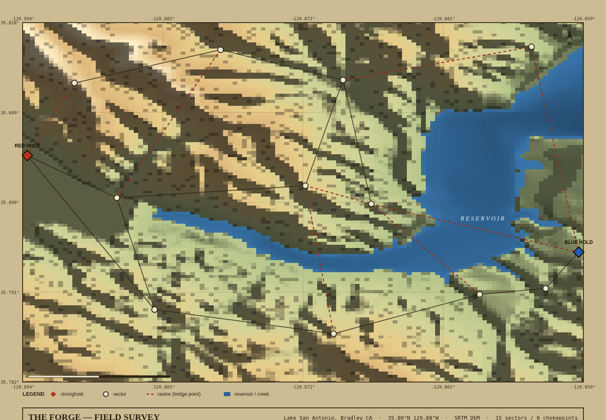

PLATE II · SELF-PLAY LEARNING CURVECEM · 12 gen

An in-silico playtest for one system of The Forge — territory, the bridge momentum layer, player classes, and a siege endgame. You can't cheaply playtest a 500-person, 90-minute field game, so this models one system and runs thousands of matches headless to read the balance before anyone books a venue. One rules engine drives the live match and the sims — a designer/GM pre-flight rig. It is the deliverable the role names: a living design document, balance logic, and playtest frameworks, not just code.

Lake San Antonio, Bradley CA — a real Lightning-in-a-Bottle venue. The reservoir & creeks form the bridge-gated ravine; control points snap to dry ground; travel-time follows real slope. Chokepoints are read off the terrain, not drawn by hand.
Self-play found an exploit the heuristics didn't
A policy trained from a blank genome reaches ~100% against the four hand-written bots — it surfaced a hole a scripted pool would have called "balanced." RL here is a better playtester, not flashy AI. (CEM, no GPU; gym-microrts/PPO skeleton ships for the scaled build.)
Terrain flips balance
The same ruleset that's fine on a symmetric board goes aggressor-dominant (~75%) on real Lake San Antonio terrain, and the venue runs side-biased. Balance is per-venue, not one-and-done — that's the recurring service.
Policies don't fully transfer · turtling is non-viable
The board-trained policy slips ~85% → ~70s% on real terrain (a transfer gap), and pure turtling can't cross the ravine. Both surface as design calls, each with the levers to change them.
Blank genome → ~100% win-rate vs the heuristic pool, with the weights it discovered (it taught itself to rush the Phase-4 siege tower).

Findings, win-rate by strategy, faction fairness, and the matchup matrix — generated on the Lake San Antonio field.
node test/smoke.mjs).docs/.node test/smoke.mjs · node rl/selfplay.mjs · python tools/fetch_dem.py.END VISION — the pre-flight for The Forge: tune economy, class weights, and phase timings per venue in sim → ship a near-balanced rulebook → spend the few expensive on-field pilots validating how real humans behave, not discovering that turtling is broken with 500 people on a field.
SCOPE · one system, finished small. Classes / intel / parley designed in full, partly wired; bots map the structural envelope, not the feel. LIVE alyasska.github.io/seed-artifact CODE github.com/Alyasska/seed-artifact